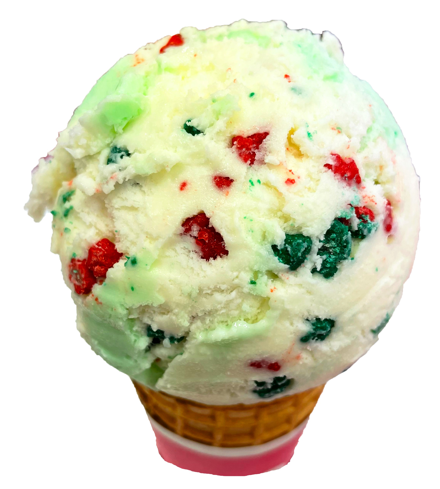

Flavor
フレーバー
通年販売しているSTANDARD FLAVORと季節限定のSEASON FLAVOR，
そして今月オススメのFOM(Flavor of the month)があります．
SEASON FLAVORをメインに紹介しています！


BR紹介サイト
サーティワンアイスクリームの紹介サイトへようこそ！
このサイトでは，分からなくなりがちな注文方法や
世の中であまり知られていない情報についてお届けします！
サーティワンはアイスクリームを通して
”すべてのお客さまに幸せをお届けすること”
をモットーにしています！
サーティワンでは注文する際に決めることがたくさん！
何から言っていいか分からない方ぜひご覧ください．
実は，アイスクリームだけでなくドリンクやハンドパックもあります！
通年販売しているSTANDARD FLAVORと季節限定のSEASON FLAVOR，
そして今月オススメのFOM(Flavor of the month)があります．
SEASON FLAVORをメインに紹介しています！
サーティワンに行ったことがある人でもなかなか知らない！？
でも知っておくと便利な情報をお届け！